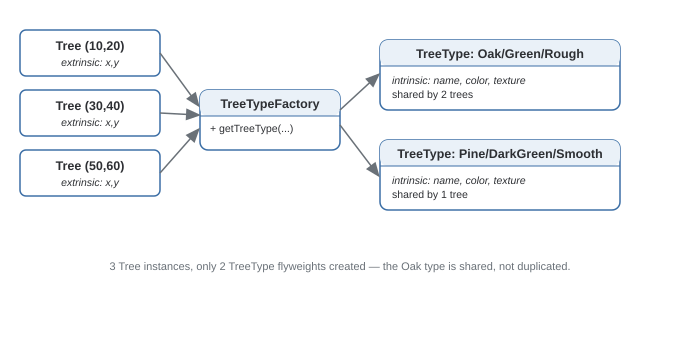

Flyweight Pattern
Uses sharing to support large numbers of fine-grained objects efficiently, by splitting state into shared (intrinsic) and per-instance (extrinsic).
Theory
The problem, in plain terms
You're building a text editor rendering a million characters. If every character on screen is its own object holding its own font, size, color, and glyph bitmap, you're duplicating identical font/glyph data a million times — most characters share the exact same formatting. That's a huge amount of memory spent storing the same information redundantly.
Flyweight splits each object's data into two categories: intrinsic state (shared and identical across many instances — the font, the glyph shape) and extrinsic state (unique per instance — position on screen, which character it is). You create and cache one shared Flyweight per unique combination of intrinsic state, and every "instance" references the shared object while supplying its own extrinsic state separately.
How it's built
A FlyweightFactory maintains a pool of Flyweight objects, keyed by intrinsic state. When something requests a Flyweight for a given combination, the factory returns an existing cached instance or creates and caches a new one. Client code calls operations on the Flyweight, passing extrinsic state in as arguments rather than storing it inside the Flyweight.
Keep intrinsic state genuinely immutable once created — that's exactly what makes it safe for one shared instance to serve thousands of logical "objects" at once.
Getting the intrinsic/extrinsic split wrong — accidentally sharing something that should have been per-instance produces subtle bugs where unrelated objects appear to affect each other.
Where it bites you
Flyweight only pays off with a genuinely large number of objects with substantial shared state — for a few dozen objects, the factory/cache machinery is pure overhead. It also pushes complexity onto the caller, who must track and pass in extrinsic state correctly every time, instead of an object simply holding its own data.
Diagram

When to Use
- You need a very large number of objects, and most of their state is actually shared across many of them.
- Memory footprint is a real, measured concern at the scale you're operating at.
- Shared (intrinsic) state can genuinely be made immutable.
- You don't have a large object count — the caching machinery is pure overhead.
- Most state is actually unique per instance — little to share, little to save.
Real-World Examples
- Text/word processor rendering — glyph/font data shared across every occurrence of the same character; position is per-instance.
- Java's
Integer.valueOf()caching — small integer values are cached and reused rather than allocated fresh each time. - String interning (Java, Python) — identical string literals can share the same underlying memory since strings are immutable.
- Game engines — trees, grass, bullets sharing mesh/texture data while each instance only stores position/rotation/scale.
- Tile-based game maps — a tile map storing references to a small set of shared tile-type objects rather than a full object per grid cell.
Interview Questions
Click a question to reveal the answer.
What's the difference between intrinsic and extrinsic state?
Intrinsic state is data shared identically across many instances — immutable, safe to reuse, stored inside the shared Flyweight (a character's font/glyph). Extrinsic state is unique per logical instance — supplied by the caller at the point of use rather than stored in the Flyweight (a character's position on the page).
Why must intrinsic state be immutable?
Because a single Flyweight instance is shared across potentially thousands of logical objects. If intrinsic state could be mutated, changing it for one logical instance would change it for every other instance sharing that Flyweight — a bug that's extremely hard to trace.
How is Flyweight different from a generic object pool?
An object pool reuses objects to avoid allocation cost, typically resetting/mutating pooled objects between uses. Flyweight specifically separates state into shared-and-immutable (intrinsic) versus per-context (extrinsic, passed as arguments) — the shared objects are never mutated once created.
When would Flyweight actively hurt rather than help?
When the object count is small, or most state is actually unique per instance — the factory/caching machinery adds complexity without meaningfully reducing memory use, and it pushes bookkeeping onto the caller who must correctly supply extrinsic state on every call.
Code & Output
Same pattern, four languages. Every output shown here was captured from a real run — note only 2 TreeType flyweights get created for 3 trees.